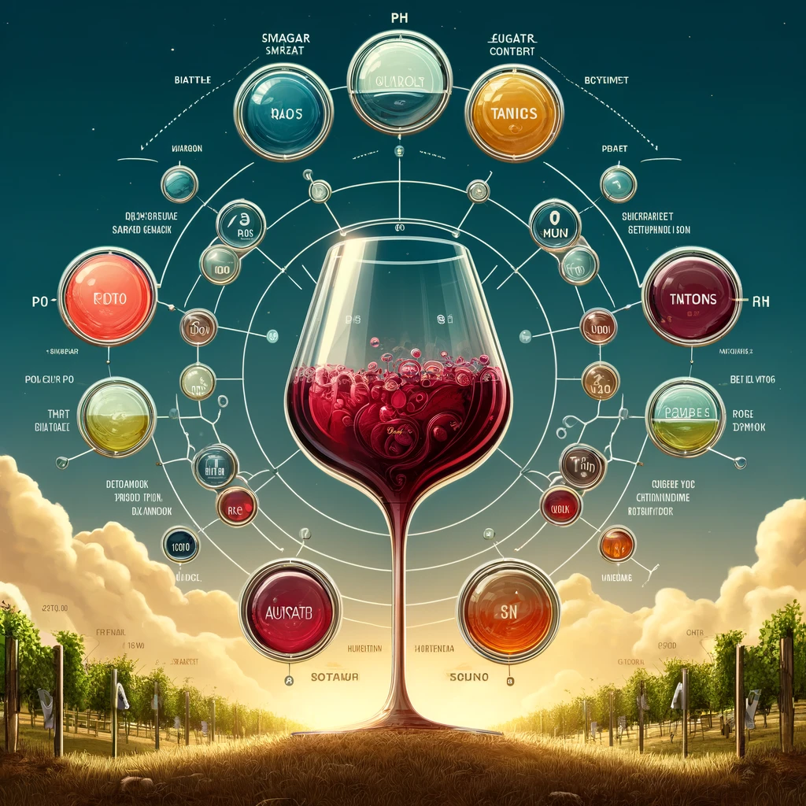
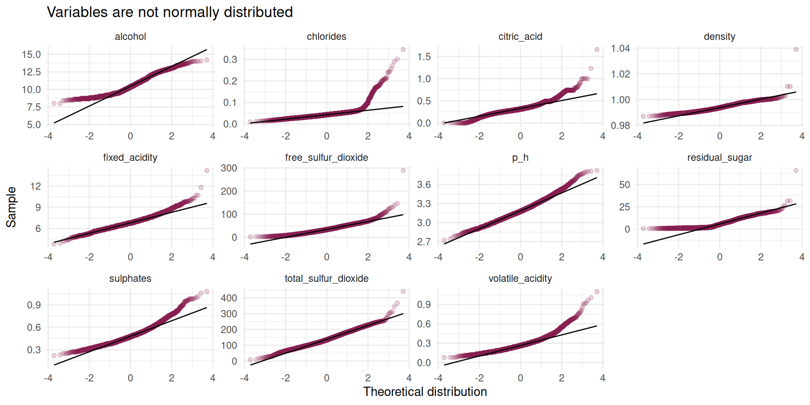
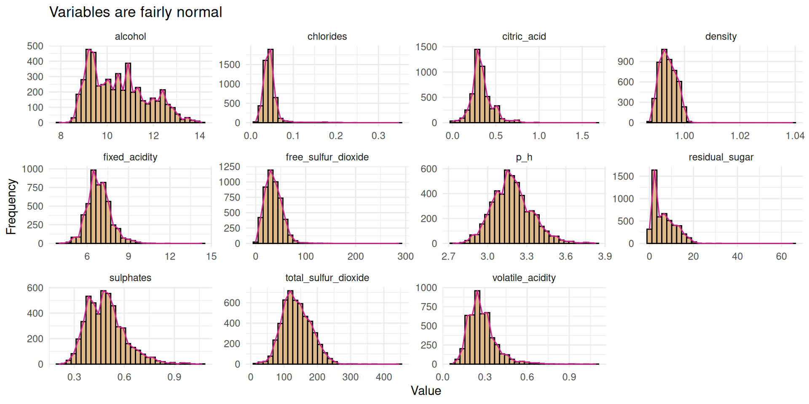
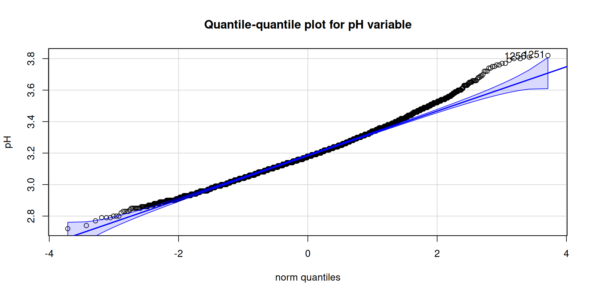
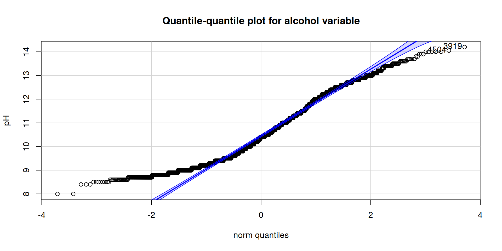
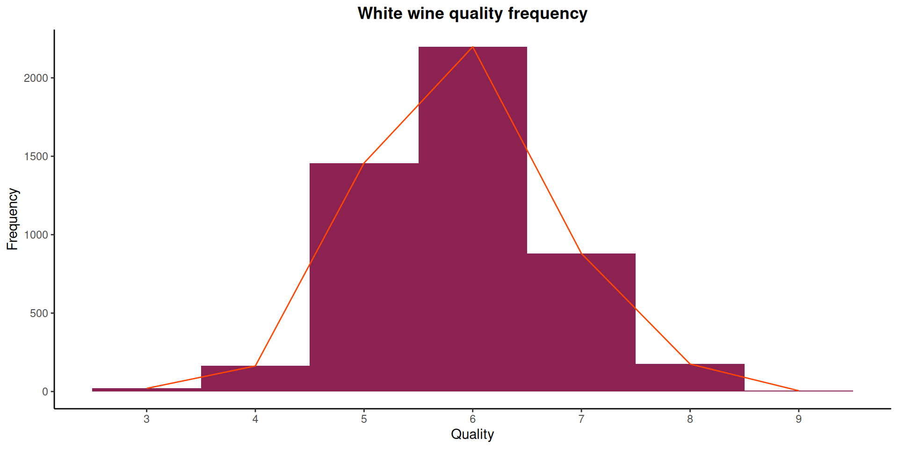
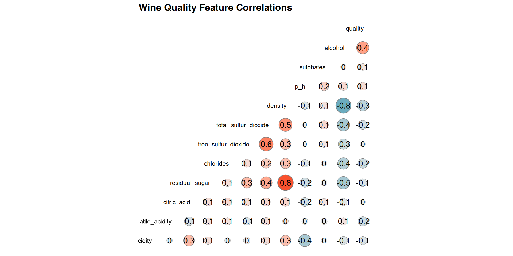
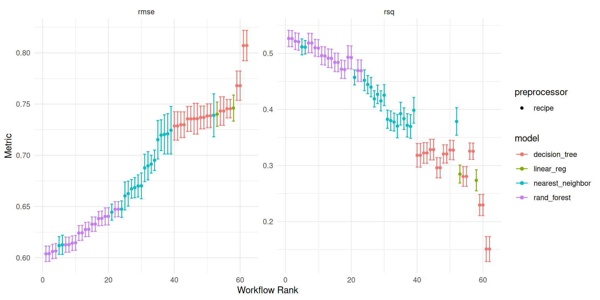
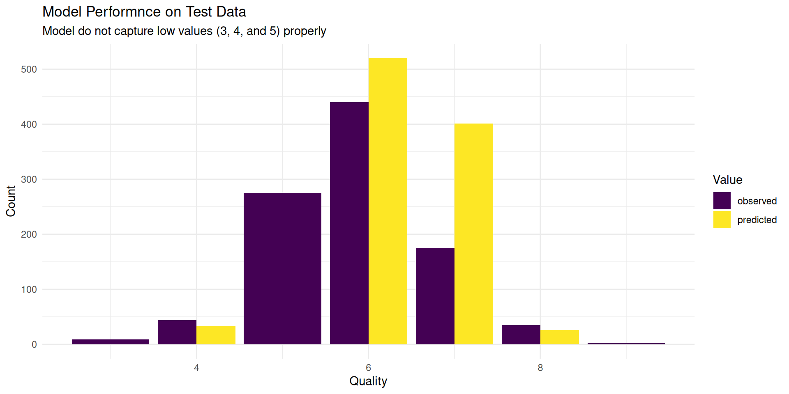
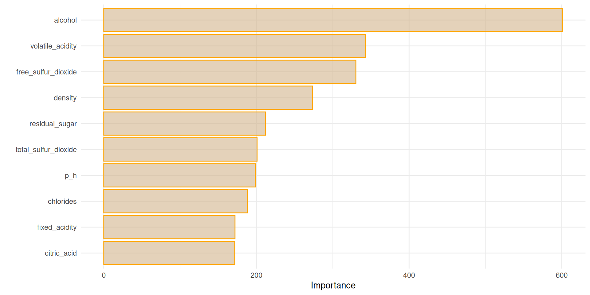

library(pacman)
p_load(tidyverse, tidymodels, gt, kableExtra, patchwork)Introduction

Wine appreciation is an art form enjoyed by many. However, beyond the subjective experience of taste, there lies a science behind wine quality. Winemakers strive to produce exceptional vintages by carefully controlling various factors during the production process. This project explores the fascinating world of wine quality, specifically focusing on the ability to predict it based on measurable chemical properties.
Objective
This project aims to develop a model that can estimate the quality of a wine using its chemical composition. By analyzing features such as acidity, residual sugar content, and sulfur dioxide levels, we aim to unlock valuable insights into the factors that contribute to a superior wine. This model can potentially benefit wine producers, retailers, and even consumers seeking a more informed approach to wine selection.
Data
Data Source
The data for this project was obtained from the UCI Machine Learning Repository, a renowned resource for publicly available datasets. This repository offers a wealth of datasets for various machine learning tasks, making it a valuable resource for researchers and data scientists.
The specific dataset we utilized is titled Wine Quality and focuses on Portuguese Vinho Verde wines.

Vinho Verde is a light-bodied wine known for its crisp acidity and refreshing taste. The dataset encompasses two separate datasets, one for red wines and another for white wines. For this project, we chose to focus on the white wine dataset.
Data Definition
The dataset contains more than 4500 wine samples, each characterized by 11 chemical properties measured during the winemaking process. These features include factors like:
Fixed Acidity: Level of acidity due to tartaric acid.
Volatile Acidity: Level of acidity due to volatile acids like acetic acid.
Alcohol: Percentage of alcohol content by volume
Residual Sugar: Amount of remaining sugar after fermentation.
pH: Measure of acidity on a logarithmic scale.
Citric Acid: Minute quantity naturally present in grapes. Winemakers may add small amounts to increase tartness and prevent haze formation.
Chlorides: Level of chloride salts that can influence a wine’s saltiness and bitterness.
Free Sulfur Dioxide: Amount of unbound sulfur dioxide (SO2) gas, a preservative commonly used to prevent spoilage by bacteria and oxidation.
Total Sulfur Dioxide: The total level of SO2 gas, including both free and bound forms.
Density: The relative density of the wine compared to water. It can be an indicator of the wine’s alcohol content and sugar level.
Sulphates: The level of sulfate salts, which can influence a wine’s overall mouth-feel and perception of bitterness.
Quality: This is the target variable, a score between 0 and 10 representing the perceived sensory quality of the wine according to human experts. This score serves as the target variable for our machine learning model, allowing us to predict the quality of a new wine based on its chemical makeup.
Setting up the Analysis Environment
To begin our analysis, we’ll import essential libraries using the pacman package for efficient dependency management.
Exploring the Data
Next, we’ll import the wine quality dataset and get a glimpse of its contents. Here, we directly use the janitor package because it’s only needed for this specific step. This approach avoids unnecessary library loading throughout the document.
wine_tbl <- read_delim("data/winequality-white.csv", delim = ";") |>
janitor::clean_names()Data Inspection: A Crucial Step
A crucial step in data analysis, after defining our goals and collecting data, is to inspect its quality and structure. This involves examining the data to identify potential issues like missing values, inconsistencies, or formatting errors. Table 1 below gives a preview of our data.
| Data Preview: Wine Quality for White Wine | |||||||||||
|---|---|---|---|---|---|---|---|---|---|---|---|
| Fixed | Volatile | Free | Total | ||||||||
glimpse(wine_tbl)Rows: 4,898
Columns: 12
$ fixed_acidity <dbl> 7.0, 6.3, 8.1, 7.2, 7.2, 8.1, 6.2, 7.0, 6.3, 8.1,…
$ volatile_acidity <dbl> 0.27, 0.30, 0.28, 0.23, 0.23, 0.28, 0.32, 0.27, 0…
$ citric_acid <dbl> 0.36, 0.34, 0.40, 0.32, 0.32, 0.40, 0.16, 0.36, 0…
$ residual_sugar <dbl> 20.70, 1.60, 6.90, 8.50, 8.50, 6.90, 7.00, 20.70,…
$ chlorides <dbl> 0.045, 0.049, 0.050, 0.058, 0.058, 0.050, 0.045, …
$ free_sulfur_dioxide <dbl> 45, 14, 30, 47, 47, 30, 30, 45, 14, 28, 11, 17, 1…
$ total_sulfur_dioxide <dbl> 170, 132, 97, 186, 186, 97, 136, 170, 132, 129, 6…
$ density <dbl> 1.0010, 0.9940, 0.9951, 0.9956, 0.9956, 0.9951, 0…
$ p_h <dbl> 3.00, 3.30, 3.26, 3.19, 3.19, 3.26, 3.18, 3.00, 3…
$ sulphates <dbl> 0.45, 0.49, 0.44, 0.40, 0.40, 0.44, 0.47, 0.45, 0…
$ alcohol <dbl> 8.8, 9.5, 10.1, 9.9, 9.9, 10.1, 9.6, 8.8, 9.5, 11…
$ quality <dbl> 6, 6, 6, 6, 6, 6, 6, 6, 6, 6, 5, 5, 5, 7, 5, 7, 6…Using the glimpse function we can get a high-level overview of the wine quality data and the data follows the expected structure in the data definition. We have 4898 rows and 12 columns. All the columns are numeric variables.
skimr::skim(wine_tbl) |>
select(-skim_type) |>
gt() |>
cols_label(
skim_variable = "Variable",
n_missing = "Missing Value",
complete_rate = "Complete",
numeric.mean = "Mean",
numeric.sd = "Standard Deviation",
numeric.p0 = "Min",
numeric.p25 = "1st Percentile",
numeric.p50 = "Median",
numeric.p75 = "3rd Percentile",
numeric.p100 = "Max",
numeric.hist = "Histogram"
) |>
tab_header(
title = "White Wine Quality Descriptive Statistics"
) |>
opt_stylize(
style = 3,
color = "gray"
) |>
as_raw_html()| White Wine Quality Descriptive Statistics | ||||||||||
|---|---|---|---|---|---|---|---|---|---|---|
| Variable | Missing Value | Complete | Mean | Standard Deviation | Min | 1st Percentile | Median | 3rd Percentile | Max | Histogram |
?@tbl-dat-sum summarizes the key characteristics of our data. It reveals:
No Missing Values: There are no missing data points, ensuring a complete dataset for our analysis.
Descriptive Statistics: ?@tbl-sum-dat presents various descriptive statistics for each variable. This includes the minimum and maximum values highlighting the data’s range. Additionally, the first and third quartile provides an insight of the distribution of values in the data. Finally the mean and standard deviation indicate the average and spread of each variables relative to their mean.
Outliers: Initial exploration of the data suggests the presence of potential outliers in several features. Specifically, the maximum values for variables
fixed_acidity,volatile_acidity,citric_acid,residual_sugar,chlorides,free_sulphur_dioxide, andtotal_sulfur_dioxideseems deviate significantly from the rest of the distribution.
The next step is to statistically confirm these observations, we can’t rely solely on inspecting the maximum values. Instead, we’ll employ appropriate outlier detection tests. Due to the fairly large data size we have, we can use either of:
Grubb’s test
Rosner’s test
These outlier detection tests help us statistically determine if the observed extreme values are likely outliers within the dataset. Both tests listed here are particularly useful for identifying outliers in a dataset that is approximately normally distributed.
Univariate Inspection
Dealing with Outliers
Before diving into formal tests, it’s important we get a sense of our data. We can visualize each variables of our data to inspect their distribution. #### Visual Inspection
wine_tbl_longer <- wine_tbl |>
pivot_longer(
cols = everything(),
names_to = "variable",
values_to = "value"
)
wine_tbl_longer |>
filter(variable != "quality") |>
ggplot(aes(sample = value)) +
geom_qq(alpha = .2, col = "violetred4") +
geom_qq_line(col = "gray3") +
facet_wrap(~variable, scales = "free") +
labs(
x = "Theoretical distribution",
y = "Sample",
title = "Variables are not normally distributed"
) +
theme_minimal()
wine_tbl_longer |>
filter(variable !="quality") |>
ggplot(aes(value)) +
facet_wrap(~variable, scales = "free") +
geom_histogram(fill = "burlywood", col = "black") +
geom_density(
stat = "bin",
col = "violetred"
) +
labs(
x = "Value",
y = "Frequency",
title = "Variables are fairly normal"
) +
theme_minimal()- shows the qqplot with variables like total and free sulful_dioxide and p_h approximately following normal distribution,(b) exposes the distribution of all variables which are mostly right-skewed.


Figure 1 shows some fairly normal data, but it won’t be bad to test for normality using Shapiro-wilk’s test. We can also use the qqPlot() function from the car package which I really like to test for the normality.
Shapiro Test
normality_test <- wine_tbl |>
map(~tidy(shapiro.test(.))) |>
bind_rows(.id = "variable") |>
select(-method) |>
janitor::clean_names() |>
mutate(
variable = str_to_title(str_replace_all(variable, "_", " "))
)
actual_colnames <- colnames(normality_test)
desired_colnames <- str_to_title(names(normality_test))
names(desired_colnames) <- actual_colnames
normality_test |>
filter(variable != "Quality") |>
gt() |>
cols_label(.list = desired_colnames) |>
tab_header(
title = "Shapiro-wilk Normality Test"
) |>
opt_stylize(
style = 3,
color = "gray"
) |>
as_raw_html()| Shapiro-wilk Normality Test | ||
|---|---|---|
| Variable | Statistic | P_value |
Cars qqPlot Test
car::qqPlot(
wine_tbl$p_h,
ylab = paste0("pH"),
main = "Quantile-quantile plot for pH variable"
)[1] 1251 1256car::qqPlot(
wine_tbl$alcohol,
ylab = paste0("pH"),
main = "Quantile-quantile plot for alcohol variable"
)[1] 3919 4504


Table 2 shows all the variables do not follow a normal distribution, Figure 2 stresses this and we can clearly see the presence of outlier.
Where Domain Knowledge Shines
While our initial exploration identified potential outliers in the data, it’s important to consider them in the context of wine making expertise. Domain knowledge from experienced professionals like Cathy Howard suggests that the expected range for residual sugar in wine can vary widely, from as low as 0.3 g/L to over 35 g/L (as referenced in this post).
This information helps us understand that some seemingly extreme values in our data might actually be plausible for certain wine types. Similarly, consulting resources like Waterhouse’s post on “What’s in Wine”. can provide valuable insights into the expected ranges for other wine components.
Given the new information about our data and the supposed outliers we investigated we can proceed with our analysis thanks to domain knowledge.
Response Variable (Quality)
There are two ways we can proceed with our analysis based on our response variable, we can either take quality as a categorical variable or a continuous variable, I prefer and will proceed with the later.
wine_tbl |>
ggplot(aes(quality)) +
geom_histogram(
binwidth = 1,
fill = "violetred4"
) +
geom_density(
stat = "count",
col = "orangered"
) +
scale_x_continuous(
breaks = seq(1, 10, 1)
) +
labs(
x = "Quality",
y = "Frequency",
title = "White wine quality frequency"
) +
theme_classic() +
theme(
plot.title = element_text(hjust = .5, face = "bold")
)

The distribution of wine ratings in Figure 3 shows a range between 3 and 9. This is the same as what we have in ?@tbl-summary. White wines rated 6 and 5 are the most occurring wine.
Correlation Matrix and Relationship Between Variables
It is important to see how the different variables relates to wine quality.
GGally::ggcorr(
wine_tbl,
method = "pairwise",
geom = "circle",
palette = "Spectral",
max_size = 10,
min_size = 2,
label = TRUE,
size = 3,
hjust = .95
) +
ggtitle("Wine Quality Feature Correlations") +
theme(
legend.position = "none",
plot.title = element_text(face = "bold")
)

Figure 4 shows some noteworthy relationships between the variables. Here are the key observations:
- Quality and Alcohol: Alcohol shows a moderate positive correlation with quality of wine
- Alcohol and Density: A strong negative correlation exists between alcohol content and density. This implies that as alcohol level increases, the density of the wine decreases.
- Quality and Density: There’s moderate negative relationship between the quality and wine density.
- Residual Sugar and Density: The density of wine is largely affected by the amount of residual sugar present in the wine
- Total Sulfur Dioxide and Free Sulfur Dioxide: A moderate positive correlation is observed between total sulfur dioxide and free sulfur dioxide. This indicates that wines with higher total sulfur dioxide content also tend to have higher levels of unbound free sulfur dioxide.
Overall there’s a fair distribution of correlation across all the variables ranging from as low as ± 0.1 to ± 0.8.
Modeling: Predicting the Perfect Potion
Imagine you’re a wine connoisseur, swirling a glass and trying to guess how good a wine will be. That’s kind of what we’re setting out to do here, but with the help of some brainy computer programs!
We’re going to test out three different “recipes” to predict white wine quality. Think of them like different ways of mixing ingredients (the info we have about the wine) to come up with a final answer (how good the wine is). Here’s the lowdown on each recipe:
Generalized Linear Model : his is a foundational recipe, like a classic soup base. It establishes a relationship between the independent variables (like acidity, sugar content) and the quality score using a specific link function. For wine quality which might be a score or rank, a linear regression within a GLM framework would likely be ideal.
Decision Tree Model: This recipe is more like a detective story with a bunch of “yes or no” questions. It splits the wine data based on different factors, asking questions like “is the alcohol content high?” or “is it a certain grape variety?” to guess the quality.
Random Forest: Imagine having a whole bunch of detectives working together! This recipe combines lots of decision tree detectives, making it more accurate and less likely to get stuck on one idea.
Nearest Neighbor: This recipe is like asking other wine experts for their opinion. It finds similar wines in the data based on the available information and predicts the quality based on how those similar wines were rated.
Data Splitting Strategy
To ensure robust model evaluation, we’ll employ a data splitting strategy. This involves dividing the dataset into two portions:
Training Set (80%): This larger portion of the data will be used to train the models. The training process involves fitting the model parameters to the data, allowing the model to learn the underlying relationships between the features (independent variables) and the target variable (wine quality).
Test Set (20%): This smaller portion of the data will be reserved for testing the final model performance. We will not use the test set for training the models in any way. Instead, the trained model will be applied to the test set, and its predictions will be compared to the actual quality scores to assess the model’s generalizability and accuracy on unseen data.
Rationale for Splitting:
The 80/20 split is a common choice for data splitting, but depending on the size of your dataset, a 70/30 split might also be acceptable. The key idea is to have a sufficient amount of data for both training and testing purposes. The training set allows the model to learn, while the test set provides an unbiased assessment of how well the model performs on new data. To ensure balance in the distribution of the response variable (quality) between the test and the training data, we’ll execute the split taking into account the distribution of the response variable, as seen in Figure 3 the response variable is unevenly distributed.
To ensure reproducibility of the code, we’ll also set.seed into 34433
set.seed(34433)
wine_split <- initial_split(wine_tbl, prop = .8, strata = quality)
wine_train <- training(wine_split)
wine_test <- testing(wine_split)We also need to evaluate the developed models, for this, we will use a cross-fold validation.
set.seed(33323)
wine_folds <- vfold_cv(wine_train, v = 10)Model Specification
To ensure a good modeling workflow, we specify our model engines, and prepare to tune some parameters, for example, the decision tree model specification, we do not know the tree depth that would be optimal, so we tune this parameter. Other parameters which cannot be predetermine when fitting our model are also tuned.
glm_spec <- linear_reg() |> # OLS specification
set_engine("glm", family = "poisson") |>
set_mode("regression")
dec_tree_spec <- decision_tree( # Decision tree specification
tree_depth = tune(),
cost_complexity = tune()
) |>
set_engine("rpart") |>
set_mode("regression")
rand_for_spec <- rand_forest( # Random forest specification
trees = 1000,
mtry = tune(),
min_n = tune()
) |>
set_engine("ranger", importance = "impurity") |>
set_mode("regression")
knn_spec <- nearest_neighbor(
neighbors = tune(),
dist_power = tune(),
weight_func = tune()
) |>
set_engine("kknn") |>
set_mode("regression")
glm_specLinear Regression Model Specification (regression)
Engine-Specific Arguments:
family = poisson
Computational engine: glm dec_tree_specDecision Tree Model Specification (regression)
Main Arguments:
cost_complexity = tune()
tree_depth = tune()
Computational engine: rpart rand_for_specRandom Forest Model Specification (regression)
Main Arguments:
mtry = tune()
trees = 1000
min_n = tune()
Engine-Specific Arguments:
importance = impurity
Computational engine: ranger knn_specK-Nearest Neighbor Model Specification (regression)
Main Arguments:
neighbors = tune()
weight_func = tune()
dist_power = tune()
Computational engine: kknn Fine Tuning the Ingredients: Feature Engineering
Now that we’ve chosen our recipe testers (models), let’s take a look at the ingredients (features) we’ll be using. Ideally, we want the ingredients to be in a format that the models can easily understand and use for their predictions. This process of preparing the data is called feature engineering.
There are many resources available to help with feature engineering, like this one link. that provides a reference for different models and recommended pre-processing techniques.
In our case, we’ll start by testing the models on the features without any preprocessing. Some models, like the ones we’ve chosen, can handle data in its raw form and might not necessarily require specific transformations.
However, that doesn’t mean there’s no room for improvement! We can explore additional options like:
Log transformation: This can be helpful for features with skewed distributions, making them more symmetrical and easier for some models to work with.
Scaled transformations (standardization or normalization): This addresses features with differing scales and units.
Formula Recipe
Here, we assume no preprocessing.
formula_rec <- recipe(
quality ~ .,
data = wine_train
)
formula_rec── Recipe ──────────────────────────────────────────────────────────────────────── Inputs Number of variables by roleoutcome: 1
predictor: 11log_zv preproc
For the second preprocessing, we do the following: - Perform a log transformation on the all predictors, step_log.
- Scale the variables so they are all on a similar scale.
log_sc_rec <- formula_rec |>
step_log(all_predictors()) |>
step_zv(all_predictors())
log_sc_rec── Recipe ──────────────────────────────────────────────────────────────────────── Inputs Number of variables by roleoutcome: 1
predictor: 11── Operations • Log transformation on: all_predictors()• Zero variance filter on: all_predictors()A preview of the preprocess object is given below Table 3
| Preview of Preprocessed data | |||||||||||
|---|---|---|---|---|---|---|---|---|---|---|---|
| Fixed | Volatile | Free | Total | ||||||||
After applying a log transformation, it’s common to encounter values like NaN (Not a Number), NA (missing values), or Inf (infinity). To ensure our models can process the data effectively, we should check for these potential issues before fitting the model. A quick summary of the preprocessed data can reveal their presence.
log_sc_preprocessed <- prep(log_sc_rec) |>
juice()
skimr::skim(log_sc_preprocessed) |>
gt() |>
as_raw_html()| skim_type | skim_variable | n_missing | complete_rate | numeric.mean | numeric.sd | numeric.p0 | numeric.p25 | numeric.p50 | numeric.p75 | numeric.p100 | numeric.hist |
|---|---|---|---|---|---|---|---|---|---|---|---|
Based on Table 4, the citric_acid feature contains NaN and Inf values. These values can cause issues for machine learning models like KNN. To ensure our models can process the data effectively, we need to rewrite the preprocessing to resolve the issue by adding 1 to values of citric_acid.
log_sc_rec2 <- formula_rec |>
step_mutate(citric_acid = citric_acid + 1) |>
step_log(all_predictors())
log_sc_rec2 |>
prep() |>
juice() |>
skimr::skim() |>
gt() |>
as_raw_html()| skim_type | skim_variable | n_missing | complete_rate | numeric.mean | numeric.sd | numeric.p0 | numeric.p25 | numeric.p50 | numeric.p75 | numeric.p100 | numeric.hist |
|---|---|---|---|---|---|---|---|---|---|---|---|
Our efforts in rewriting the preprocessing step have paid off! As shown in Table 5, the citric_acid feature is now free of NA, NAN, and Inf. We can now proceed with the model training process using the preprocessed data from Table 5.
Workflow
Now that we’ve chosen our feature engineering techniques and defined the models we’ll be using, it’s time to bring them together. To capture this entire workflow, we’ll create a workflow object
Think of this workflow object like a recipe book. It will hold all the ingredients (the recipe objects specifying the feature engineering steps) and the instructions for each dish (the model specifications). This allows us to easily apply both recipe options (feature engineering approaches) to each model we’re testing.
The workflow_set() function will be our handy tool for creating this comprehensive recipe book. It ensures we can seamlessly combine different feature engineering choices with various models, allowing for a more thorough analysis.
This approach allows us to explore different combinations and see which recipe (feature engineering) works best for each model in predicting white wine quality.
wf_object <- workflow_set(
preproc = list(
no_preproc = formula_rec,
log_zv = log_sc_rec2
),
model = list(
glm = glm_spec,
dec_tree = dec_tree_spec,
rf = rand_for_spec,
knn = knn_spec
),
cross = TRUE
)Finding the Perfect Settings: Parameter Tuning
We’ve chosen our models and put together our workflow, but there’s one more step before we can unleash them on the wine data. Each model has its own set of “knobs” we can adjust to fine-tune its performance. These knobs are called “hyperparameters,” and finding the right settings for them can significantly impact how well the model predicts wine quality.
Imagine you’re baking a cake. You have a recipe to follow (the model in this case), but you can adjust things like the oven temperature or the baking time (the hyperparameters) to get the perfect result. Here, we’ll use a technique called “grid search” to explore different combinations of these hyperparameters for each model.
To make this process faster, we’ll use a package called doParallel. This helps us leverage multiple processing cores on your computer, essentially dividing the work and speeding things up.
The workflow_map() function comes in handy again. It allows us to apply the grid search technique to all the models we defined in our workflow. We’ll also set verbose=TRUE during this step, which means the computer will show us the progress (although we won’t include those details in this explanation).
By exploring different hyperparameter combinations, we aim to find the settings that make each model perform at its best when predicting white wine quality.
doParallel::registerDoParallel(cores = 8)
wf_tune_fit <- workflow_map(
wf_object,
fn = "tune_grid",
grid = 10,
resamples = wine_folds,
seed = 11,
verbose = TRUE
)
doParallel::stopImplicitCluster()Tune Result
autoplot(wf_tune_fit) +
theme(
legend.position = "bottom"
) +
theme_minimal()

Figure 5 provides a visual breakdown of how the different models performed in predicting white wine quality. We used two key metrics to evaluate their success: RMSE and R-Squared.
The clear winner based on these metrics is the Random Forest Model! It achieved the lowest RMSE and highest R-Squared score, indicating both high accuracy (low error) and a strong correlation between its predictions and the actual wine quality score.
Following closely behind is the KNN (K-Nearest Neighbors) model. While it performs well, there’s a noticeable gap between its performance and Random Forest’s. This suggests that Random Forest might be a more robust choice for predicting wine quality in this particular dataset.
Examining Specific Model Results
As Figure 5 revealed, the Random Forest model is the top performer. To gain a better understanding, let’s take a closer look at the tuning process result.
top_model <- rank_results(wf_tune_fit, rank_metric = "rmse", select_best = TRUE)
top_model |>
select(-c(preprocessor, n)) |>
mutate(
.config = str_remove_all(.config, "Preprocessor1_Model"),
wflow_id = case_when(
str_detect(wflow_id, "no_preproc") ~ "No Preprocessing",
.default = "Log + scale transformation"
),
model = str_replace_all(model, "_", " "),
model = str_to_title(model)
) |>
pivot_wider(
id_cols = c(wflow_id, model, .config, rank),
names_from = .metric,
values_from = mean
) |>
gt() |>
cols_label(
wflow_id = "Recipe",
.config = "Resample Number",
model = "Model Type",
rank = "Rank",
rmse = "RMSE",
rsq = "R-Squared"
) |>
tab_spanner(
columns = rmse:rsq,
label = "Evaluation Metric"
) |>
tab_header(title = "Top Performing Models") |>
opt_stylize(
style = 3,
color = "blue",
add_row_striping = TRUE
) |>
as_raw_html()| Top Performing Models | |||||
|---|---|---|---|---|---|
| RMSE | R-Squared | ||||
Table 6 offers a comprehensive overview of each model’s performance, providing valuable insights beyond the visual representation in Figure 5. Here’s what we can learn from this table:
- Model Performance: It clearly shows the best performing model based on the chosen evaluation metrics (e.g., RMSE, R-squared). This allows for a quick comparison and identification of the champion model.
- Preprocessing Status: The table indicates whether each model was trained on data that underwent preprocessing (like feature scaling) or not. This information helps us understand if preprocessing played a role in the model’s performance.
- Resample Selection: It specifies the resample object used to select the best performing model version during the tuning process. This provides context about the training and validation data used for each model.
Preprocessing does not improve the performance of all models except the Generalized Linear Model which showed slight improvement.
Next we get the workflow object and finalize the model
Finalize Model
Finalizing the model involves few steps:
- extract the workflow object of the best model which id is
no_preproc_rf
rf_model <- wf_tune_fit |>
extract_workflow(id = "no_preproc_rf")
rf_model══ Workflow ════════════════════════════════════════════════════════════════════
Preprocessor: Recipe
Model: rand_forest()
── Preprocessor ────────────────────────────────────────────────────────────────
0 Recipe Steps
── Model ───────────────────────────────────────────────────────────────────────
Random Forest Model Specification (regression)
Main Arguments:
mtry = tune()
trees = 1000
min_n = tune()
Engine-Specific Arguments:
importance = impurity
Computational engine: ranger - extract the workflow tuning results on the resamples and select the best metric
rf_workflow_res <- wf_tune_fit |>
extract_workflow_set_result("no_preproc_rf")
best_tune <- select_best(rf_workflow_res, metric = "rmse")
best_tune# A tibble: 1 × 3
mtry min_n .config
<int> <int> <chr>
1 7 6 Preprocessor1_Model08- The best tuning parameter is seen in Table 7. We use these values of the parameter with our recommended model with its recommended preprocessing and use the
finalize_workflow()function to fit our final workflow.
recommended_workflow <- finalize_workflow(
rf_model,
parameters = best_tune
)
recommended_workflow══ Workflow ════════════════════════════════════════════════════════════════════
Preprocessor: Recipe
Model: rand_forest()
── Preprocessor ────────────────────────────────────────────────────────────────
0 Recipe Steps
── Model ───────────────────────────────────────────────────────────────────────
Random Forest Model Specification (regression)
Main Arguments:
mtry = 7
trees = 1000
min_n = 6
Engine-Specific Arguments:
importance = impurity
Computational engine: ranger The result shows that our parameters from tuning have been inserted into the model automatically.
- The last step involves fitting the workflow recommended from our analysis to the split data set.
doParallel::registerDoParallel(cores = 6)
final_model <- last_fit(
object = recommended_workflow,
split = wine_split
)
doParallel::stopImplicitCluster()Model Evaluation
We can see how well the model performs on the test data. We applied ceiling() function to round our predictions as we they are count data.
final_model |>
collect_predictions() |>
mutate(
.pred = case_when(
.pred < 5 ~ floor(.pred),
.default = ceiling(.pred)
)
) |>
select(observed = quality, predicted = .pred) |>
pivot_longer(
cols = c(predicted, observed),
names_to = "type",
values_to = "value"
) |>
ggplot(aes(value, fill = type)) +
geom_bar(position = "dodge") +
labs(
x = "Quality",
y = "Count",
title = "Model Performnce on Test Data",
subtitle = "Model do not capture low values (3, 4, and 5) properly",
fill = "Value"
) +
scale_fill_viridis_d() +
theme_minimal()
Feature Importance
Feature importance sheds light on the factors that are driving the decisions which our model makes and the one which might be irrelevant. This can provide a lot of valuable insights on what truly matters to white wine consumers. We can investigate this using the vip library.
library(vip)
final_model |>
extract_fit_parsnip() |>
vip(
num_features = 10,
geom = "col",
aesthetics = list(
fill = "tan",
col = "orange",
alpha = .6
)
) +
theme_minimal()

Apparently, alcohol is the number one feature.
#Conclusion This analysis explored the use of machine learning to predict white wine quality based on its chemical components. We compared four models: Generalized Linear Model (GLM), Decision Tree, Random Forest, and K-Nearest Neighbors (KNN). Through training and evaluation, the Random Forest model emerged as the top performer, demonstrating strong predictive capabilities.
It’s important to acknowledge a potential limitation. While Random Forest excels at continuous predictions, the actual quality scores might be assigned discrete labels (e.g., 6 = good, 8 = excellent). This difference in representation between the model’s predictions and the actual quality scores could lead to minor inaccuracies.
Despite this consideration, the Random Forest model has proven to be a powerful tool for predicting wine quality within the 0-10 range. Future explorations could involve:
Classification Models: Investigating models specifically designed for predicting discrete quality categories (e.g., good, bad) might provide even more accurate results when directly aligned with the scoring system. Feature Engineering: Exploring alternative feature engineering techniques could potentially further refine the model’s ability to capture the nuances of wine quality based on its chemical components.
This analysis has successfully demonstrated the potential of machine learning for white wine quality prediction. By understanding the strengths and limitations of different models and data considerations, we can continue to refine our approach and develop even more accurate models for wine quality assessment.